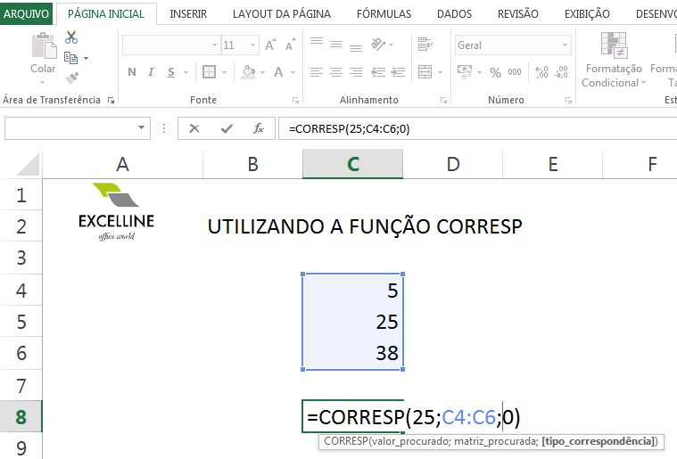
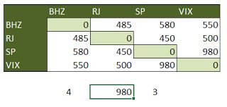
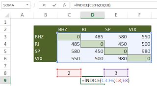

Algumas funções do Excel fazem muita diferença no trabalho e ainda assim são desconhecidas pela maioria e a ÍNDICE é uma delas. Em essência ela busca, dentro de uma matriz, o valor que está no cruzamento de uma linha com uma coluna e a CORRESP, sua parceira natural, descobre a posição de um item numa lista.
Baixe a planilha do exercício: modelo-excel-indice-e-corresp.xlsx. Ela traz os exemplos deste capítulo com as fórmulas funcionando: altere os valores azuis e veja o resultado. Traz a matriz de distâncias, o ÍNDICE por números e por nomes com cálculo de frete e o CORRESP.
ÍNDICE: o cruzamento de linha e coluna
O cenário é o de uma transportadora que precisa da distância entre duas cidades para calcular o frete. O exemplo tem só quatro capitais, fácil de consultar com os olhos, mas poderiam ser 400 ou mais. Do Rio de Janeiro, segunda linha da matriz, até São Paulo, terceira coluna, são 450 quilômetros e de Belo Horizonte, primeira linha, até Vitória, quarta coluna, são 550.

A sintaxe tem três argumentos:
=ÍNDICE(MATRIZ; LINHA; COLUNA)
No exemplo a matriz é o intervalo C3:F6 e a linha e a coluna vêm das células C8 e E8. O ponto que mais confunde e que merece atenção é que o número da linha da matriz não tem relação com o número da linha da planilha: a linha 2 da matriz está, fisicamente, na linha 4 da planilha.

O exercício funciona, mas deixa perguntas de segurança. O que acontece se o usuário informar um número fora da faixa, ou digitar a sigla da cidade em vez de um número? A resposta está em validar a entrada e em usar controles de formulário, os dois temas dos capítulos seguintes.
CORRESP: a posição de um item
Segundo a documentação da Microsoft, a função CORRESP procura um item em um intervalo e devolve a posição relativa dele. Se o intervalo C4:C6 contém 5, 25 e 38, a fórmula abaixo devolve 2, porque o 25 é o segundo item da lista.
=CORRESP(25; C4:C6; 0)

Use CORRESP no lugar das funções de procura quando precisar da posição do item e não do item em si, por exemplo para fornecer o número da linha a uma função ÍNDICE. A dupla ÍNDICE e CORRESP substitui o PROCV em muitos casos, com mais flexibilidade e você pode transformar o número de linha digitado do exemplo em uma busca pelo nome da cidade.
O que mudou desde este capítulo
A dupla ÍNDICE e CORRESP continua indispensável quando o arquivo precisa funcionar em versões antigas do Excel. Nas versões atuais, o PROCX resolve muitos desses casos com uma só função.
Comentários
Dúvida, discordância ou outro ponto de vista? Escreva aqui e eu respondo.